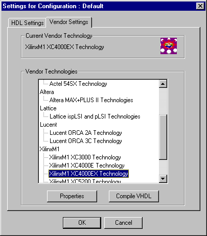

Design creation is one of the bottlenecks to time to market with as much as 70% of the designers time spent in this highly iterative process. The design creation process is changing as HDL methods become mainstream. Functional requirements (state machine, adders, FPGA I/O configuration) may benefit from different definition methods. Desktop Individual is a design creation environment that supports three different methods from schematic, state diagram and textual HDL.You choose the method that best suits the requirement. Another powerful feature is that the Desktop Individual provides data and configuration management. The tools are integrated, no merging of files by hand. FPGA designers can benefit from these capabilities. Minimize your time to market with the affordable FPGA Desktop Individual.
Desktop Individual offers built in support for design re-use or Intellectual property (IP).
Design management tools provided include design object, design hierarchy and design flow managers. The award winning VeriBest DesignView design manager, gives the designer the choice of using VeriBest's own integrated simulation tools, integrated FPGA synthesis tools like Synopsys' FPGA Express or Synplicity's Synplify in conjunction with integrated FPGA vendor place & route tools. With it's combination of graphical design objects , hierarchical views, simulation data manager and FPGA Vendor Place and Route configuration manager, complex design management has never been easier than with VeriBest's DesignView design manager.
VeriBest's textual and graphical editors also make
light work of the individual design tasks, making best use of
native Microsoft capabilities. Automatic VHDL and Verilog generators
allow designers to design as they think and not worry about HDL
style issues for downstream synthesis tools such as Synopsys'
FPGA Express or Synplicity's Synplify."
With FPGA Desktop Individual you can automatically generate industry standard VHDL or Verilog for the entire design, all at the same time.
Traditionally source-level debugging has only been associated with textual HDL-level representations. With VeriBest Origin's graphical editors the "source" refers to any form of design representation including graphical state diagrams, flowcharts or spreadsheet type truth tables, boolean equations or state tables. This very importantly allows each portion of the design to be debugged in its original source format, offering significant gains in designer productivity. This true source level debugging is fully integrated into the VeriBest simulators.
FPGA Desktop's schematic and State Diagram editors have built in on-line syntax verification functions, providing immediate feedback to design definition.This is particularly important for multi-user project based design teams. Such verification includes connectivity, HDL syntax, assignment and state register consistency, state, clock, reset, guard values and bus reference checks.
Desktop Individual offers integrated design flow support for all of the following FPGA vendors - Actel, Altera, Lattice, Lucent ORCA or Xilinx

FPGA Desktop Individual is also fully scalable to FPGA Desktop Team which additionally offers team-wide based multi-vendor FPGA design for all the above FPGA vendors.
| Corporate Headquarters Boulder, Colorado 1.888.482.3322 email: sales@veribest.com http://www.veribest.com |
United Kingdom (44)1793.551.199
Germany (49) 89.96284.0 France (33) 1.41.76.35.00 Nordic (46) 8.92.54.00 Asia/Pacific (852) 2.893.3621 Japan (81) 3.5979.6331 |
|---|